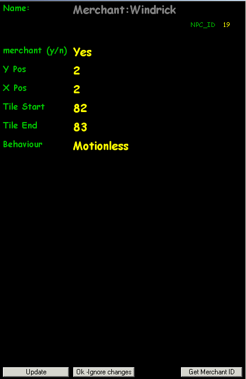
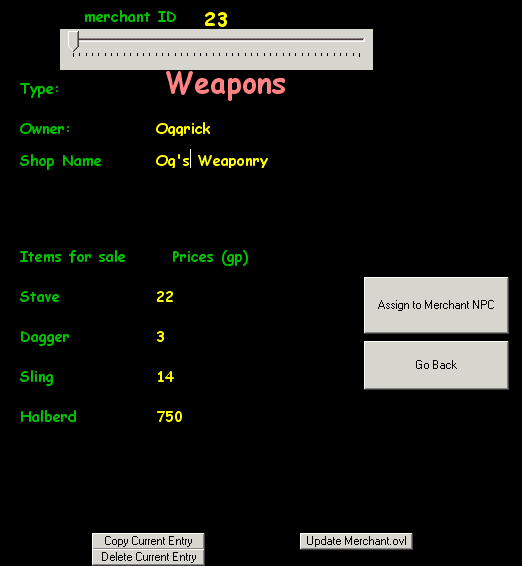

Town Editor
PAGE - 4 -
Merchants - page 4 ADDING A WEAPON MERCHANT
Now that you understand the various classes available, we will create a WEAPONS merchant. Click on NPC/ADD/Add Merchant. A merchant icon will appear at position 2,2. Left click and examine this entry
|
SAMPLE EXCERPT FROM MERCHANT.OVL `23 Weapons Winston Windsor Weaponry Stave Dagger Sling Sword 20 2 25 300 X X X |
|  | As you can see, the computer has assigned an
npc_id of 19 which is a pre-assigned as a food merchant - See this by clicking
on 'GET MERCHANT ID'
`19
But we want a WEAPON vendor so move the slider to the left and identify merchant id = 23. In fact moving to any other class will assign that NPC to that merchant class after you click on ASSIGN TO MERCHANT NPC `23 Click on ASSIGN TO MERCHANT NPC. Now you have a weapon merchant! Let's edit what he sells and his name. |
|  | But first we should not overwrite Winston's data, rather we
will CLONE this by clicking COPY CURRENT ENTRY. You are then asked a
index# (19-255) but try 100 for now since that's not used. Now you will
see a copy of winstons weapons for editing at index 100. This number
is also the NPC'id when assigned to a NPC
By clicking on the various items, you can change the name, some items and prices for example as seen here. To write these changes permanently, click on UPDATE MERCHANT.OVL If you do not want this entry, click on DELETE CURRENT ENTRY. If you want to assign this to the merchant we created, click on ASSIGN TO MERCHANT NPC. Change this NPC's location to 4,14 so he resides within his shop, then make sure he tracks/follows player.Click on UPDATE then select FILE/UPDATE (*.ult) to save all changes. To add Lord British or Seer Hawkind, just select those. Lord British is always npc_id =17 and the seer=18 Merchants start at 19-255. To delete the last NPC, click on NPC/Delete this/Delete Current NPC. The last NPC used is the one deleted. Click on any NPC then delete. Tip - You can have many many merchants per town, up to 32 in fact and they all could be Weapon merchants if you wish. They can all share the SAME merchant id's, but that's a bit extreme. Tip - NPC-Id = Merchant-Id (19 to 255) |
Lastly, try to create a GUILD merchant and a few other NPC's by applying what you've learned already. Simple eh?